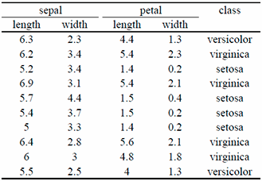
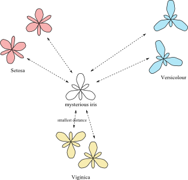
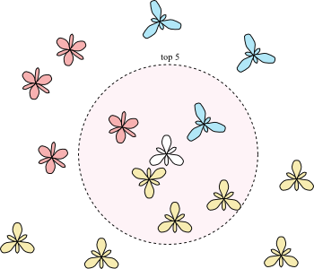

In the last post, we introduced what was the « Classification » of Machine Learning. We also presented some examples of applications (banks, hospitals, etc.) and we started to play with the Iris dataset. If you have not read the first post, now would be a good time in order to fully understand the following article.
Back to the Iris story: Remember, we have a list of iris flowers described by the length and width of their petals and sepals (the attributes). Also, we know the species of all except one iris (we will call this iris the “mysterious iris”), and we would like to find the species (or class) of the mysterious iris. For this task, we suppose the attributes of the irises to be indicative of the species.
The first solution that comes to mind in this situation is probably to look for another iris with the same length and width of their petals and sepals. If we find such iris, its class (i.e. species) is probably the same as for our mysterious iris. Unfortunately, it is very unlikely that another iris has exactly the same dimensions. In practice, looking for an observation with the exact same attribute values is rarely a good solution: There will always be some small differences, and you will often not find a matching observation.
Instead of looking for iris with the same attribute values, it might be interesting to look for irises which are “almost” the same. In other words, we want to look for irises with “close” attribute values. If two irises have very similar dimensions, they will look very similar and therefore, they are probably of the same species.
However, if several irises of different species look similar to our mysterious iris this might be problematic. Instead of looking for irises that are similar, we want to look for the single iris which is the “most similar”. It means that we need to define precisely what it means for two irises to be “similar”. It means that we also need to define what it means for an iris to be more similar to another iris than to a third one.
The solution used by scientists is to define a “distance” between two irises. If the distance between two irises is large, they are different. If the distance between two irises is small, they are similar. There are many ways to define distances. For this example, we will show the one that computer scientist use the most often: The Euclidean distance. This name might be a frightening word, but in fact the “Euclidean distance” is probably what you understand by the word “distance” or “flying distance”.
However, while it is easy to understand the (Euclidean) distance between two points on a map; it might be more complex to understand the distance between two iris flowers.
To compute this distance we need to remember your school education about the “square” and “square root” of a number. Remember, the square of a number is this number multiplied by itself. For example, the square of 2 is 2^2 = 2 x 2 = 4. The square of 3 is 3^2 = 3 x 3 = 9. The square root of a number is the opposite of the square: The square root of 4 is 2, and the square root of 9 is 3.
Back to our distance: To compute the (Euclidean) distance, you need to add the square of the differences of the attribute values, and to apply the square root on that number. Let’s have an example: Let’s compute the “Euclidean distance” between the two first irises of the table below.

The distance between the two first irises is:
sqrt{(6.3-6.2)^2+(2.3-3.4)^2+(4.4-5.4)^2+(1.3-2.3)^2}
= sqrt{15.18} = 3.90
Now, let’s compute the distance between the first and third irises:
sqrt{(6.3-5.2)^2+(2.3-3.4)^2+(4.4-1.4)^2+(1.3-0.2)^2}
= 3.70
This second value is smaller (3.70 is smaller than 3.90). It means that the first iris is more similar to the third iris that to the second iris.
For those who remember and noticed, the Euclidean distance is actually the Pythagorean Theorem (almost).
Now, you might have figured out how to find the most similar iris: We simple need to compute the distance between the mysterious iris and all the other irises, and to look for the iris with smallest distance. This simple solution is actually a real solution that many scientists are using. It even has a name: It is called the “1-nearest neighbors”.

Often, the “1-nearest neighbors” solution works well, but sometime, it might work very poorly for different possible reasons. One of the possible reasons might be that the measurements of the attributes are bad or imprecise. In this case, the distances measured will also be bad and imprecise, and the algorithm will be inefficient to find the true best class.
Scientists have found a simple solution to this problem: Instead of looking for the most similar iris (i.e. iris with the smallest distance), they look for the 5 most similar irises. In other words, they look for the 5 irises with the smallest distances to the mysterious iris. If all these irises are of the same species, the problem is easy: The class of the mysterious iris is the same as the class of all the 5 closest irises.
However, if the 5 closest irises have different classes (species), something else needs to be done: In this case, the scientists are counting the number of irises of each class, and it is the class represented by the largest number of irises that will be given to the mysterious iris. For example, if out of the 5 closed irises, 1 of them are Setosa, 1 of them is Versicolour and the remaining 3 of them are Viginica, therefore it is likely that the mysterious iris is also Viginica.
This solution is called the “5-nearest neighbors”.

Now, you might ask the question why looking for the closest 5 irises? Why not 2, 10 or 50? And you are right. These other algorithms are respectively called 2-nearest neighbors, 10-nearest neighbors and 50-nearest neighbors. Knowing which one of these algorithms is the best is a hard to answer question – it actually depends a lot of the problem. We won’t talk about that here, but you should just know that in practice, scientists very often test all these values and just keep the best one.
Scientists refer to all these algorithms by “k-nearest neighbors”.
This is now the end of this post. At this point, you should understand a bit more the famous “k-nearest neighbors” algorithms. In the next post, I will present a much younger, complex but powerful algorithm called Random Forest. I hope you enjoyed this post, and I will see you next time.